A · One night in Bryce
- ThuLas Vegas
- FriSpringdale
- SatNarrows
- SunZion → Bryce
- MonBryce → Vegas
- TueFly home
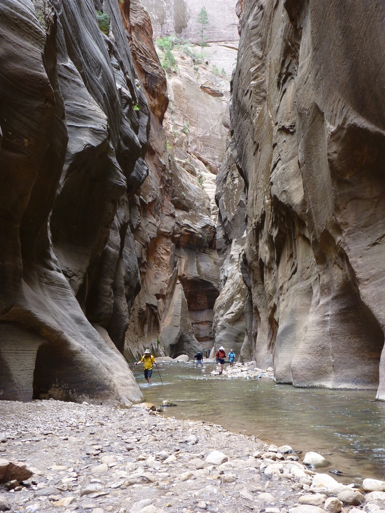
Six days, three families, one magic show and some of the most memorable canyon country in the American Southwest.
All three plans fit the flights. The decision is whether to preserve a Narrows weather-backup day or give Bryce a slower, more memorable visit.
Fri: skip Valley of Fire or keep it very short so everyone can collect gear. Sat: Narrows. Sun: short Zion walk, drive to Bryce, overlooks and sunset. Mon: optional sunrise, Queen’s Garden–Navajo, lunch and overlooks; leave around 2:00–2:30 p.m. Utah time and reach Las Vegas around 6:00–6:30 Nevada time.
Sun: transfer to Bryce for overlooks and sunset. Mon: full hiking and scenic-drive day.
Monday night at Bryce: leave by 9:00 a.m. MDT Tuesday for the roughly 4½-hour drive to LAS. The westbound time change helps, but weather, traffic and Turo delays reduce the flight buffer.
St. George alternative: drive about two hours Monday evening instead, then finish the trip Tuesday with a shorter flight-day transfer.
Open itinerary B →Fri: optional Valley of Fire en route to Springdale. Sat: dry-land Zion hikes and gear pickup. Sun: Narrows, with Saturday available as a weather swap. Mon: Queen’s Garden–Navajo, then Las Vegas. Tue: relaxed morning and flight.
This version devotes three nights to Springdale and visits Bryce in one concentrated day.
Open itinerary C →The routes differ only in how the five nights are divided among Springdale, Bryce and Las Vegas.
Times below are wheel time in normal conditions, before meals, hikes, photo stops and October weather. Utah is one hour ahead of Nevada during this trip.
Direct: I-15 north through the Virgin River Gorge, then UT-9 through Hurricane to Springdale. This is the fastest and simplest route.
With Valley of Fire: leave I-15 at Exit 75, cross the park west-to-east, take NV-169 through Overton back to I-15, then continue to Springdale. Allow roughly 3¼–3¾ hours of driving plus 1–2 hours in the park.
Scenic route: UT-9 east through the Zion–Mt. Carmel Tunnel, US-89 north and UT-12 through Red Canyon. This is the route to take if the van fits.
Large-vehicle bypass: UT-9 west, I-15 north, UT-20 east, US-89 south and UT-12 east. NPS estimates 150 miles and about 2½ hours—only around 42 minutes longer.
Fast route: UT-12 west, US-89 north, UT-20 west and I-15 south through Cedar City and St. George. Use this for Monday’s return.
Scenic Zion route: US-89 south and UT-9 west through the park, then I-15 south. It is prettier but repeats Zion, adds uncertainty and may not work for the van.
| Base | What it is best for | Tradeoffs | Fit for this trip |
|---|---|---|---|
| West side · Springdale | The Narrows, Zion Canyon hikes, restaurants and walkable gear pickup. The Springdale shuttle connects town to the pedestrian entrance; the park shuttle then reaches Temple of Sinawava. | More expensive and busier. The Springdale town shuttle begins at 8 a.m., so a very early start may require walking, driving to paid parking or staying near the entrance. | Stay here. It removes the most friction on both the gear-fitting afternoon and Narrows morning. |
| East side · East Zion, Orderville or Mt. Carmel | Quiet scenery, East Mesa access for Observation Point, Canyon Overlook and a head start toward Bryce. | No town-to-canyon shuttle, fewer restaurants and outfitters, and a long morning trip to the Narrows shuttle. Each canyon visit requires the tunnel or the Highway 20 bypass. | Better for a Bryce-focused trip or one final transition night—not for this Narrows-centered weekend. |
Beginning June 7, 2026, the Zion–Mt. Carmel Highway is closed to any vehicle exceeding a single limit: 35 ft 9 in long, 7 ft 10 in wide, 11 ft 4 in high or 50,000 lb. Mirrors and fixed accessories count. A normal passenger van may fit, but the exact 12-passenger model and any roof equipment decide the route.
Worth doing if everyone is happy to trade a leisurely Springdale arrival for brilliant red sandstone, petroglyphs and a very different landscape from Zion.
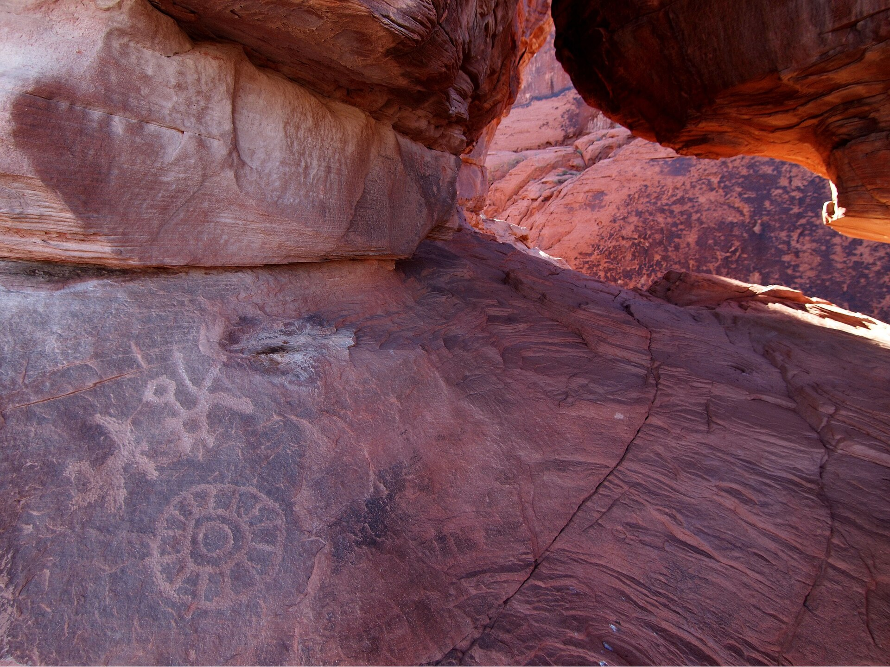
75Drive west-to-east through the park. Stop at the Beehives, climb the Atlatl Rock stairs for petroglyphs, and finish with the 0.2-mile Elephant Rock out-and-back near the east entrance.
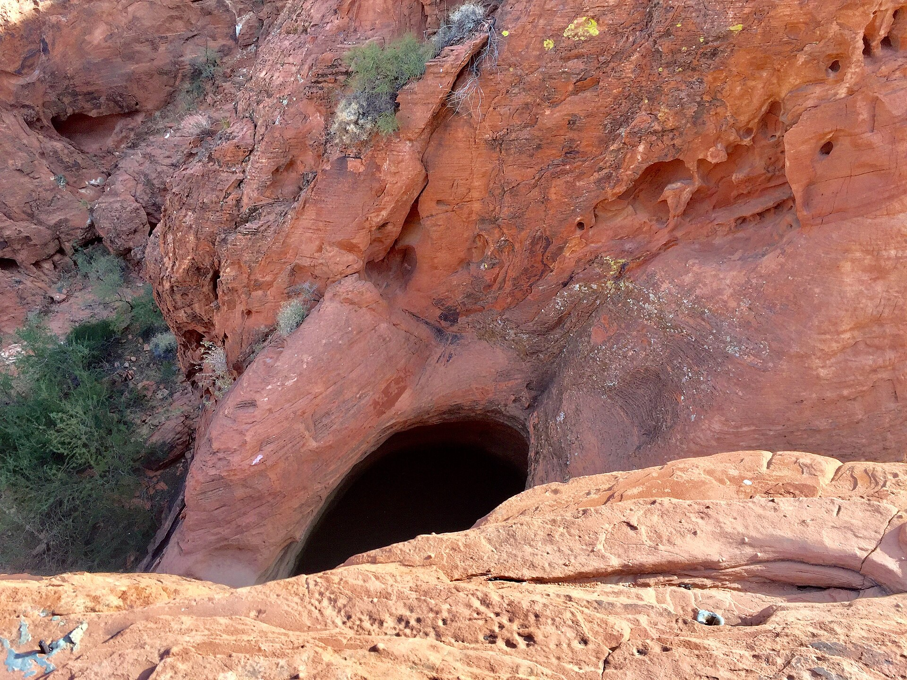
2hAdd Mouse’s Tank for a sandy, kid-friendly petroglyph walk, or Fire Wave/Seven Wonders if the group wants a more scenic 1.8-mile loop. This pushes Springdale later.
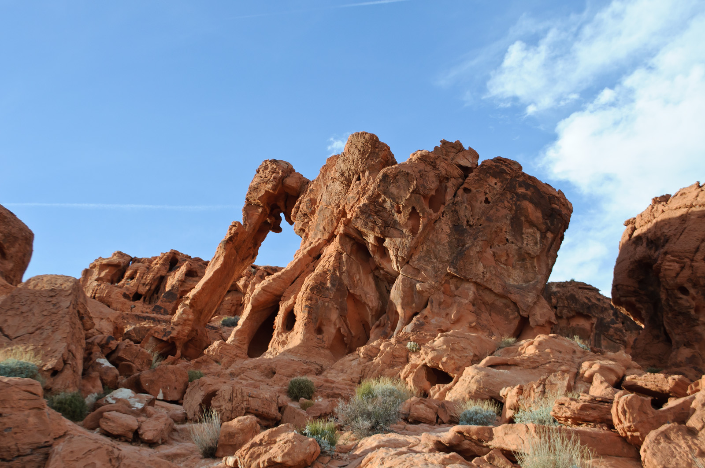
↗Elephant Rock is the simplest last stop near the east entrance. Skip the whole park if breakfast runs late, the forecast is hot, or the kids need downtime before Zion.
Valley of Fire photos: Ken Thomas (public domain), w_lemay (CC0), InSapphoWeTrust (CC BY-SA 2.0), and Daniel Schwen (CC BY-SA 4.0), via Wikimedia Commons.
Think in experiences, not rankings: do the signature hike, combine nearby short highlights, then add a longer outing only if time and energy allow.
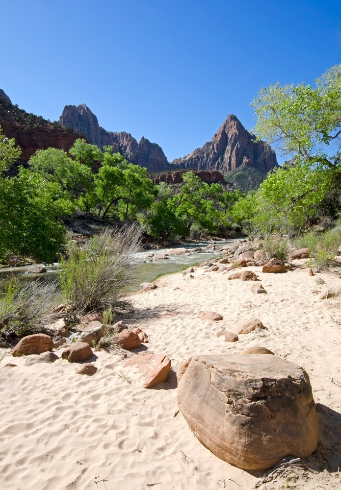
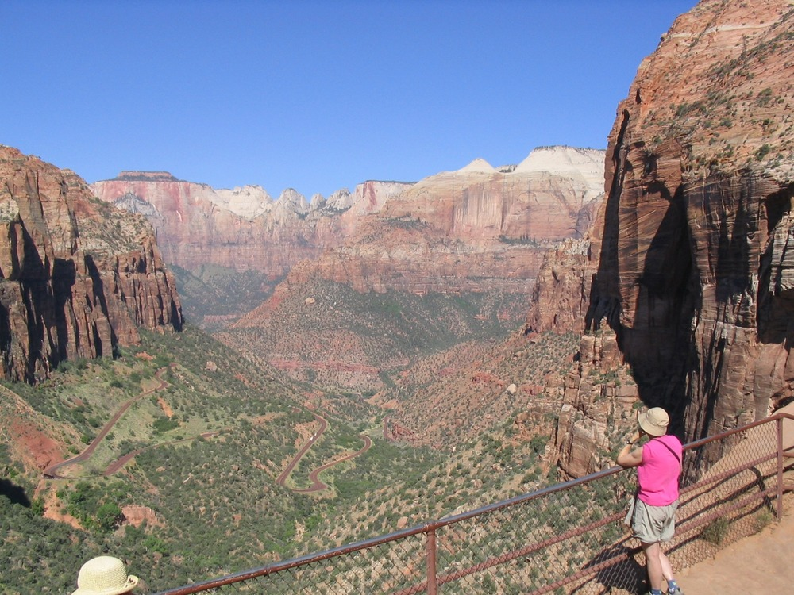
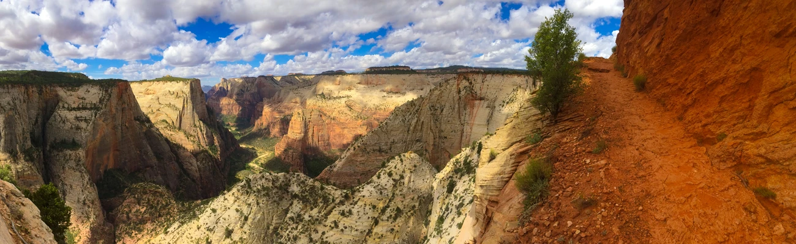
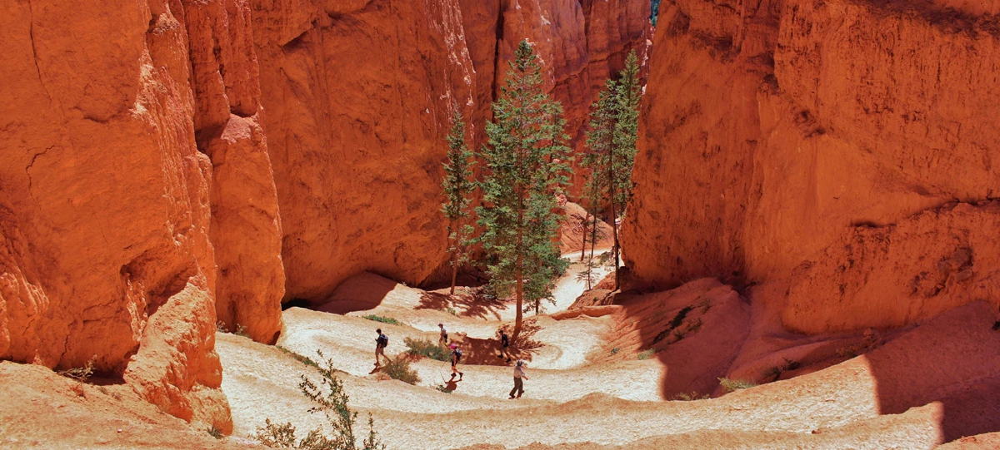
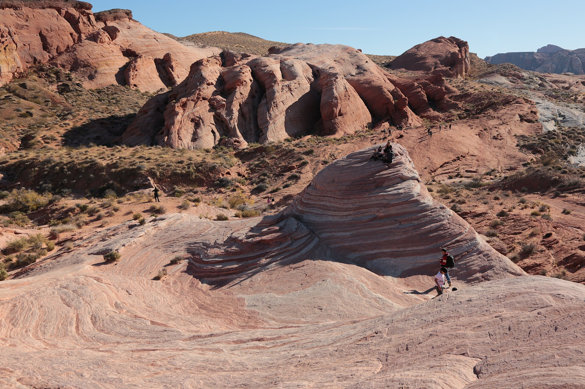
National-park images courtesy of the National Park Service. The Narrows: NPS Photo / Marc Neidig. Valley of Fire: Daniel Schwen, Wikimedia Commons, CC BY-SA 4.0.
A first visit has two must-do pieces: walk among the hoodoos and see the amphitheater from several rim viewpoints. These complement one another rather than compete.
Descend Queen’s Garden from Sunrise Point, climb the Two Bridges side of Navajo Loop and return along the rim. This supplies the essential below-the-rim experience.
It’s a magnificent and moderately easy hike.
— Gerry Weiss, AllTrails
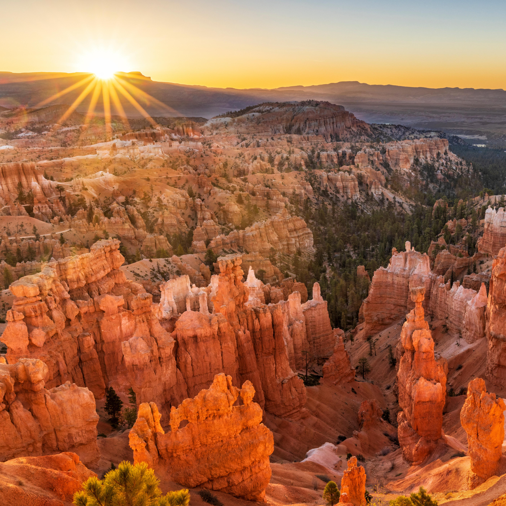
Must do · combine theseWalk the easy one-mile Sunrise–Sunset rim section, then drive or shuttle to Inspiration and Bryce Points. Treat these as a 1½–2½ hour sightseeing circuit, not four competing hikes.
Beautiful. Easy. Solid path. Recommended for all ages.
— MNC T, AllTrails
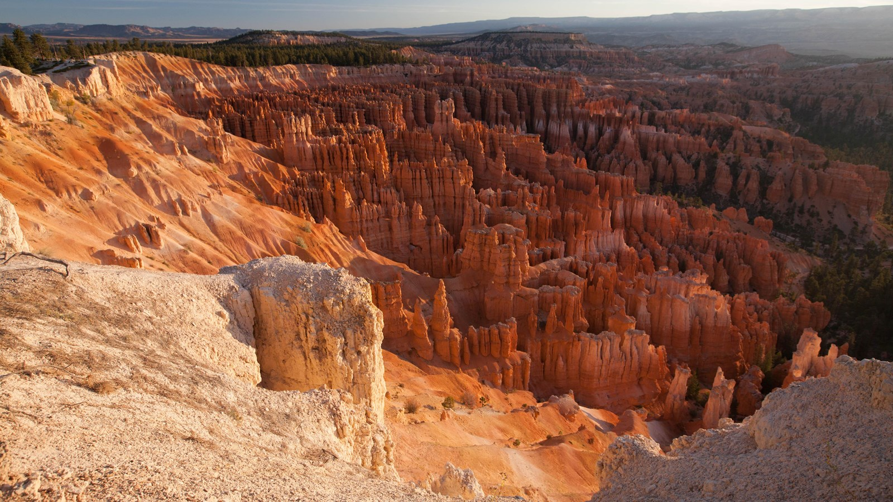
Best at golden hourThe widest, most layered amphitheater view. Make this the late-afternoon or early-evening finale rather than a separate activity to choose.
Official NPS details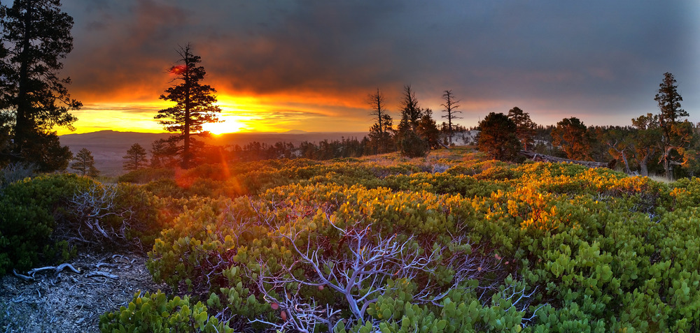
Quick must-see stopAdd this panoramic stop before or after Inspiration Point. It is high impact for very little walking and does not need its own block of the day.
Official NPS viewpoints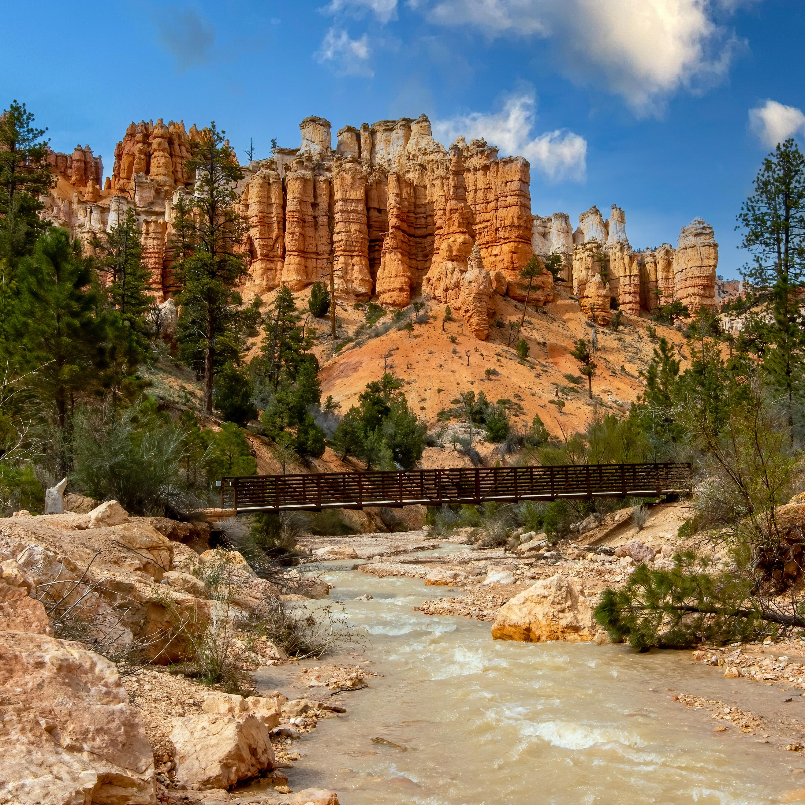
Nice to haveA pleasant streamside add-on outside the main amphitheater. Do it only if parking is easy and you have extra time; it is not essential to a first Bryce visit.
The stream was really nice and the waterfall was pretty!
— Eliza Naumann, AllTrails
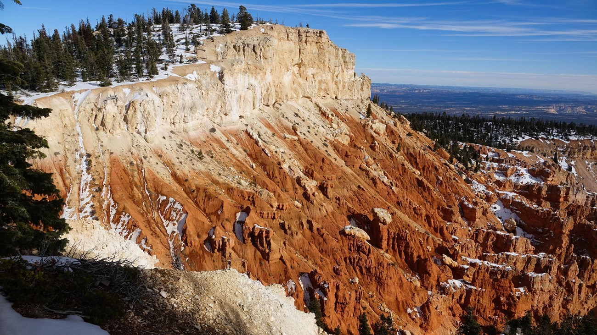
Nice to have · half dayCombine the southern overlooks, Rainbow Point and the one-mile Bristlecone Loop. Worthwhile with a second Bryce day; easy to omit on a Monday day trip.
It’s cooler up here, bring a jacket.
— Jay Donihoo, AllTrails
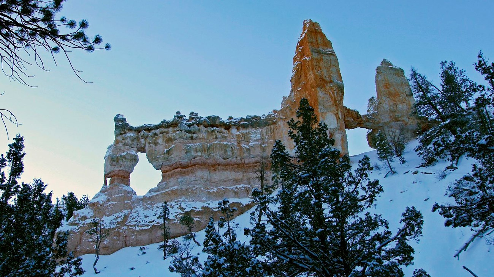
Quieter alternativeFollow the southern Fairyland Loop to the Tower Bridge spur. It is similar in effort to Queen’s Garden–Navajo but quieter, so choose it as an alternate below-the-rim hike rather than stacking both.
This trail was practically empty! We really enjoyed it.
— Sarah Becker, AllTrails
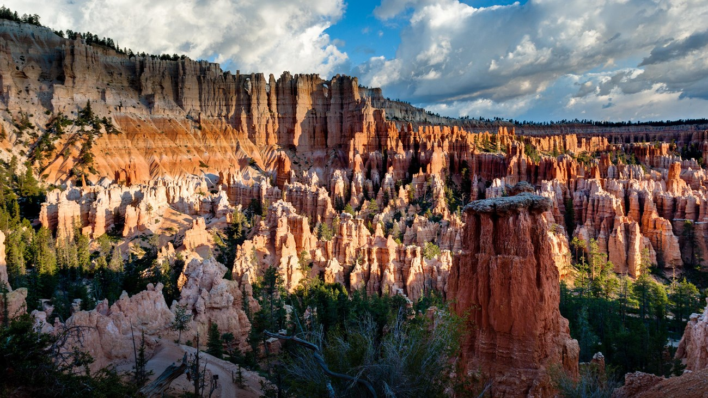
Optional big outingA spectacular, steep loop through the Wall of Windows area. This fits your mileage range but is considerably harder at Bryce’s elevation; make it the main hike of a longer Bryce day, not an add-on.
Epic hike, beautiful all the way round.
— Jo Iacono, AllTrails
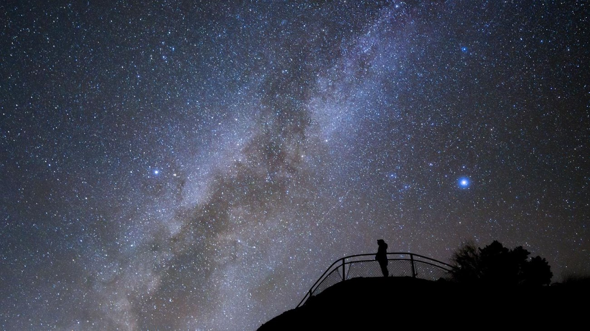
Memorable after-dark add-onBryce is an International Dark Sky Park. Check the calendar for a ranger telescope program, or visit Sunset, Sunrise, Inspiration or Paria View independently; bring the warmest layers and preserve night vision.
Official NPS detailsBryce images courtesy of the National Park Service. Conditions and seasonal closures can change; verify current trail status before hiking.
The Narrows is the signature outing. On the dry-land day, ride the canyon shuttle and collect several short landmarks in one natural sequence instead of choosing only one.
Ride to Temple of Sinawava, walk the Riverside Walk, then enter the river and turn around whenever cold, footing or energy says so. This is one continuous experience.
One of a kind hike…go as early as possible.
— Owen R, AllTrails
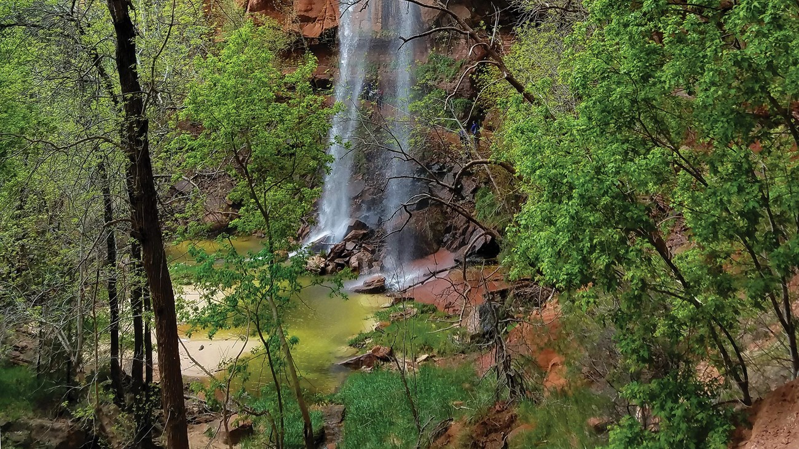
Must do · combine theseOn Saturday, shuttle to Zion Lodge, walk to Lower Emerald Pool, then hop off at Big Bend for the Great White Throne view. Add Court of the Patriarchs if everyone is enjoying the stops.
The views along the trail surpass the emerald pools themselves.
— Vejas Belzinskas, AllTrails
Both start near the visitor center. Hike Watchman for a satisfying half-day outing, then use Pa’rus as an easy sunset walk after dinner or gear pickup.
Great hike in Zion for views…without taking the shuttle.
— Amanda Berg Wilson, AllTrails
Exceptional scenery per mile, but awkward with a 12-passenger van because parking is tiny. Add it while driving toward Bryce only if vehicle rules, parking and timing cooperate.
Kid friendly! Parking is a challenge.
— Tyler Herzog, AllTrails
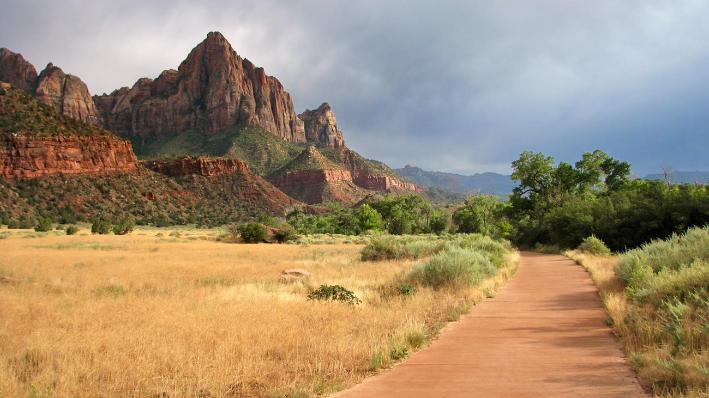
Easy gap-fillerThis is Zion’s equivalent of an easy scenic stop: use it on arrival evening, after Watchman, or whenever the group has 30–60 spare minutes.
Great family hike!
— Kindall Johnson, AllTrails
A superb panorama but a separate half-day commitment, not a quick landmark stop. With this trip’s schedule and usual mileage, save it for a future visit unless the group actively wants the longer hike.
Amazing views of the river and Angels Landing.
— Eddy R, AllTrails
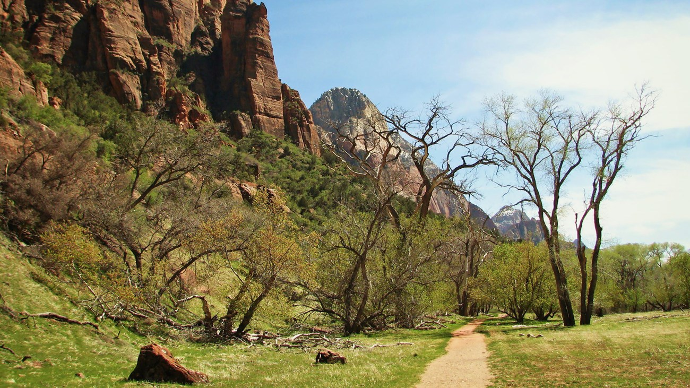
Easy connectorThis flat, shaded path connects Zion Lodge and the Grotto shuttle stops. Fold it into the Lower Emerald Pool and lodge-area circuit when the group wants another easy mile, with chances to see deer and turkeys.
Perfect way to warm up your legs before longer trails.
— AllTrails overview
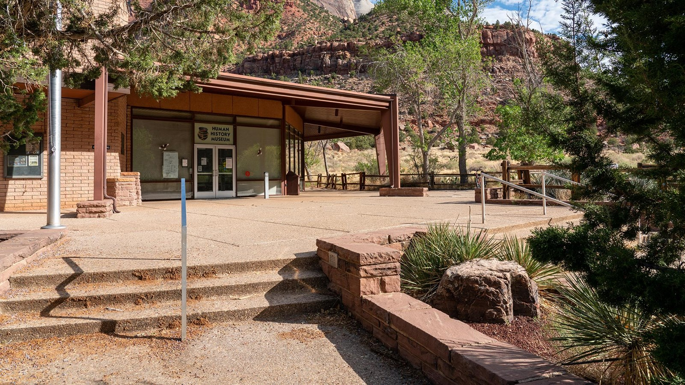
Best weather backupA strong arrival-day, rest-hour or bad-weather option. The museum adds context about Zion’s people and landscape, while the back patio frames West Temple and the Towers of the Virgin. Verify seasonal hours.
Official NPS details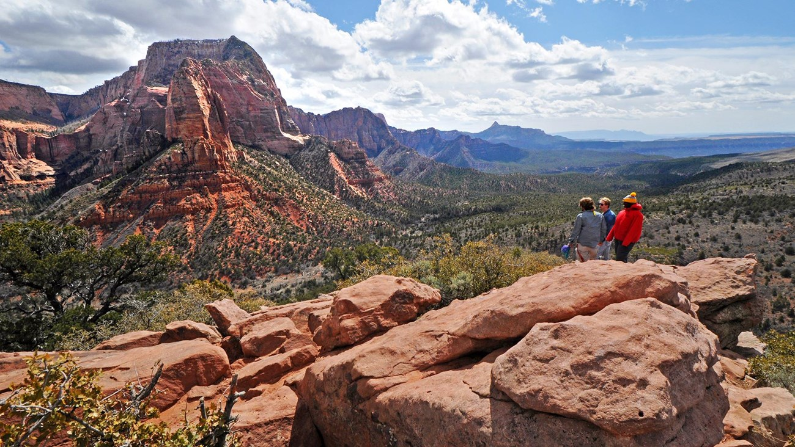
Optional Kolob detourA short, family-friendly ridge walk at the end of Kolob Canyons Road; groups of 12 are allowed. It is about an hour from Zion Canyon, so use it only with an I-15 travel day or a dedicated Kolob visit.
Easy for three kids all 10 and under to complete.
— Ayla Rose, AllTrails
Trail and activity images courtesy of the National Park Service.
These are historical averages—not a forecast. The trip climbs from roughly 2,000 feet in Las Vegas to about 8,000 feet at Bryce, so everyone should pack for summer-like sun and freezing mornings.
Usually warm, sunny and dry enough for short sleeves during the day. Evenings are comfortable, but a light layer helps after the Shin Lim show or at an outdoor dinner.
Pack within reach: sun hats, sunscreen, refillable water bottles and one light sweater.
NWS October climate dataAfternoons are often excellent for hiking, while shaded canyon mornings can feel much colder. Daily high-to-low swings can approach 30°F. Rain is not the norm, but any storm forecast matters greatly for The Narrows.
Pack within reach: hiking layers, a light puffy or fleece, rain shells and dry clothes for after the river.
NPS Zion climateSunny afternoons can be beautiful, but freezing nights and October snowstorms are normal possibilities at this elevation. Wind on the exposed rim can make sunrise and sunset feel substantially colder.
Pack within reach: warm pants, puffies, hats and gloves for everyone; add waterproof shoes and traction only if the forecast calls for snow or ice.
NPS Bryce weatherDress in removable layers rather than packing three separate wardrobes. Keep the Bryce cold-weather kit together in the van so it does not get buried beneath luggage.
For six children, reservable full dry suits and good fitting support matter more than finding the absolute cheapest package.
| Outfitter | Tripadvisor | Estimated base cost for 12 | Assessment |
|---|---|---|---|
| Zion Guru | 5.0/5 · 965 reviews | 6 bibs × $65 + 6 dry suits × $85 = $900 | Best reviews and orientation; first call.“Exceptional outfitter company for all of your needs in Zion.” |
| Zion Adventures | 4.7/5 · 993 reviews | Starts around $828 | Excellent family reviews and fittings; strongest alternative.“The fitting process was very thorough.” |
| Zion Outfitter | 4.4/5 · 303 reviews | $708 less group discount ≈ $637 | Cheapest and beside the entrance, but child dry suits may not be firmly reservable.“The process was very quick and efficient.” |
The modest premium is worthwhile across three families if it secures six correctly sized children’s dry suits and a careful orientation.
Start with the live October price snapshot, then use the larger hotel lists below for reviews, character and backup choices.
Compare every quoted stay in spreadsheet-style tables organized by Springdale or Bryce Canyon City and by 1-, 2- or 3-night stay. Each row shows the per-family average nightly rate, one-family stay total and the full three-family total.
The base for itineraries A, B and C before the group moves to Bryce or returns to Las Vegas. The ranges below are general Tripadvisor ranges, not quotes for your October dates.
| Hotel | Tripadvisor | Published range | Best reason |
|---|---|---|---|
| Desert Pearl Inn | 4.8/5 · 3,546 reviews | $183–$528 | Most memorable: large rooms, kitchenettes and a river setting.“The rooms were so nice and clean.” |
| Hampton Inn & Suites | 4.7/5 · 2,724 reviews | $93–$575 | Best practical balance: breakfast, pool and town shuttle.“The view of the red cliffs was amazing.” |
| Cable Mountain Lodge | 4.7/5 · 1,641 reviews | $160–$492 | Best park logistics; walk to the entrance.“We stayed for 6 days… and had a great experience!” |
| Bumbleberry Inn | 4.3/5 · ~1,900 reviews | $122–$353 | Central value choice with breakfast included.“Great location to access Zion and walkable to restaurants and shops.” |
| Cliffrose | 4.7/5 · 2,570 reviews | $254–$900 | Upscale river grounds and walkable park access.“A warm welcome and a beautiful location.” |
| Zion Lodge | 4.4/5 · 2,701 reviews | Recent reviews mention ~ $400 | Unique in-park setting, but fewer restaurant choices.“Breathtaking views and good access to the park.” |
| Best Western Plus Zion Canyon Inn & Suites | 4.8/5 · 778 reviews | $133–$463 | Newer-feeling rooms, breakfast, pool and a shuttle stop across the street.“Their location is fantastic.” |
| SpringHill Suites Springdale Zion | 4.5/5 · 791 reviews | $125–$512 | Spacious family rooms, free breakfast and strong patio views; parking may cost extra.“The hotel overall was a great fit for our family.” |
| Flanigan’s Resort & Spa | 4.6/5 · 1,083 reviews | $247–$696 | Small boutique property near the park with attractive grounds, pool, spa and on-site dining.“The atmosphere was serene and quiet.” |
Bryce Canyon City itself has very few hotels, so this list also includes the in-park lodge and nearby Tropic. All work for itinerary A’s Sunday night or itinerary B’s Sunday and Monday nights.
Its proximity is especially valuable for sunset, an optional sunrise and an early Queen’s Garden–Navajo start.
Bryce Canyon City → Tropic → Panguitch
Hotel lean: Bryce Canyon Grand Hotel for practical comfort, or Stone Canyon Inn in Tropic if you want the lodging itself to feel special.
| Hotel | Tripadvisor | Published range | What it offers |
|---|---|---|---|
| Best Western Plus Bryce Canyon Grand Hotel | 4.2/5 · 5,190 reviews | $100–$417 | Larger, cleaner-feeling family option with spacious rooms, breakfast, pool and park shuttle; no dinner restaurant on site.“The rooms are huge—and very clean. Quiet.” |
| Best Western Plus Ruby’s Inn | 3.6/5 · 7,955 reviews | $90–$305 | Most complete little “village”: restaurants, general store, indoor pool, breakfast and shuttle. Rooms are older and reviews are more mixed.“#1 hotel choice for visiting Bryce Canyon NP.” |
| Bryce View Lodge | 3.1/5 · 1,586 reviews | $86–$273 | Simple value choice near the shuttle; guests use parts of the Ruby’s complex. Expect basic, dated rooms rather than a memorable property.“A very basic and convenient motor motel near Bryce Canyon.” |
| SpringHill Suites by Marriott Bryce Canyon | New · no reviews yet | $182–$364 | Brand-new all-suite hotel in Bryce Canyon City with breakfast and modern rooms. Confirm it has opened before booking.No traveler reviews are available yet. |
| The Lodge at Bryce Canyon | 4.0/5 · 2,446 reviews | $194–$457 | Inside the park and walkable to Sunrise and Sunset Points. Historic and memorable, but rooms are rustic and availability is tight.“Being right inside the park… is simply priceless.” |
| Bryce Canyon Pines Lodge | 3.6/5 · 749 reviews | $80–$205 | About ten minutes from the park with an on-site restaurant; older rooms and reviews are mixed.“Great location, great pool, good restaurant.” |
| Stone Canyon Inn | 4.5/5 · 880 reviews | $182–$268 | Quiet, memorable cabins and larger family units in Tropic, about 15–20 minutes from the park.“This was our favorite stay.” |
| Bryce Country Cabins | 4.0/5 · 587 reviews | $112–$215 | Individual cabins with two-queen layouts, porches, refrigerators and microwaves in Tropic.“The cabins are super clean.” |
These trade park-door convenience for price, dining choices or a shorter Tuesday drive. Times are approximate in normal conditions.
| Town | Drive relationship | When it makes sense | Places to start |
|---|---|---|---|
| Tropic | 15–20 min to Bryce | The strongest near-Bryce alternative: more cabins and a few more independent restaurants without materially changing the hiking plan. | Stone Canyon Inn; Bryce Country Cabins |
| Panguitch | About 30 min to Bryce | Useful when Bryce Canyon City is expensive or full; real grocery options and generally better value. | The Panguitch House; Countryside Cabins |
| Cedar City | About 1 hr 35 min from Bryce | A workable Monday-night westward reposition with more restaurants and chain hotels. It preserves more Tuesday buffer than Bryce, but less than St. George. | Abbey Inn; Courtyard; SpringHill Suites |
| St. George | About 2½ hr from Bryce; about 2 hr to LAS | The most useful Monday-night alternative for itinerary B: nearly a full Bryce day followed by an easier flight day. | Hyatt Place; Inn on the Cliff; Staybridge Suites |
| Hurricane / La Verkin | 30–45 min to Zion entrance | A lower-cost substitute for Springdale only. It adds morning driving and weakens Narrows-day logistics, so use it only for substantial savings. | Wingate; Best Western Plus Zion West |